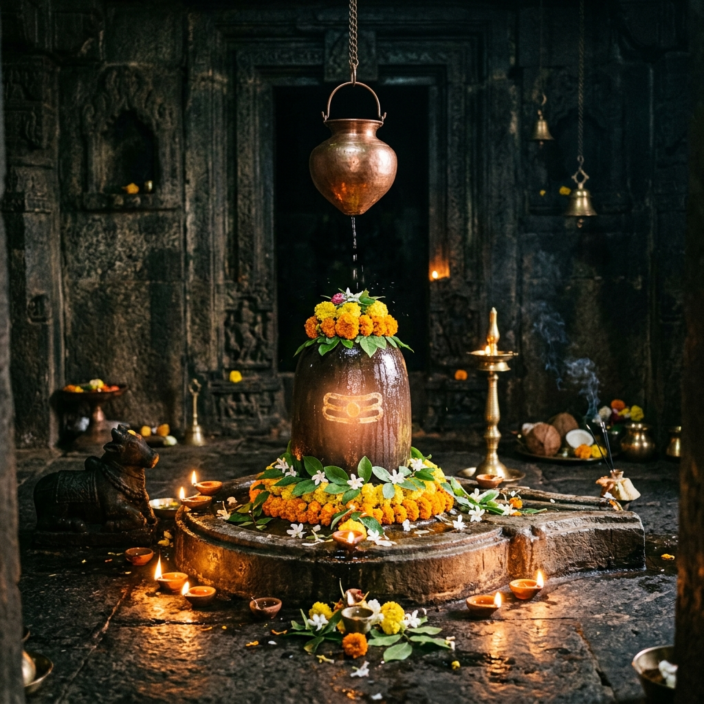

About the Temple
Discover the divine story of Shri Sangameshwara Swamy Temple — a sacred haven where Lord Shiva's grace protects the quiet agricultural land of Kosam.
Discover the divine story of Shri Sangameshwara Swamy Temple — a sacred haven where Lord Shiva's grace protects the quiet agricultural land of Kosam.

Shri Sangameshwara Swamy Temple stands as a central pillar of spiritual life in the rustic countryside of Kosam (Khasampur) village, near Humnabad in Bidar district. Dedicated to Lord Shiva, worshipped in the form of a sacred stone Shiva Lingam, the temple provides a deeply quiet, soul-soothing environment away from modern commercialization.
For generations, the temple has served as the core cultural and religious gathering point for the farming communities of Kosam, Changler, and neighboring villages. Surrounded by vast fields of sugarcane, jowar, and local trees, the temple blends seamlessly into the agricultural heritage of the Deccan Plateau.
Here, faith is community-led and unpretentious. The preservation of the temple and its daily rituals rests entirely on the local villagers, making every visit an encounter with authentic rural devotion and ancient tradition.

The name "Sangameshwara" traditionally signifies Lord Shiva as the Lord of Confluence. In the ancient Deccan region, shrines under this name were built near local water streams, confluences, or key spiritual junctions of old pilgrimage paths, symbolizing the meeting points of divine and natural energies.
The elders of Kosam village believe that the presence of Sangameshwara Swamy guards the fields against severe droughts, keeps the groundwater fertile, and brings agricultural prosperity. Devotees regularly offer prayers here before starting a new venture or commencing a sowing season.
Worshipping Lord Shiva here in the quiet early hours of the morning is believed to wash away worldly anxieties, granting mental clarity, inner strength, and simple spiritual contentment.

The structure of the temple features a classic, sturdy Deccan style design, specifically built to withstand the elements. Constructed primarily of local stone, the layout reflects the traditional vernacular architecture of rural Karnataka and adjoining Deccan regions.
At the heart of the complex is the main sanctum (Garbhagriha), a small, dark stone room where the presiding stone Shiva Lingam resides. Preceding the sanctum is a modest gathering hall (Mandapa) supported by simple stone pillars, where villagers gather for community bhajans and prayers.
The simplicity of the structure highlights its spiritual vibrations. Free from commercialized ornamentation, the temple retains its authentic character and historical charm, preserved carefully by the community over the decades.
"In the quiet countryside of Kosam, where devotion rises from the fields, Lord Sangameshwara stands as a silent guardian — protecting the earth and bringing ultimate peace to the seeking soul."
— Local Village Lore
The environment surrounding Shri Sangameshwara Swamy Temple is key to its serene character. Located away from commercial roads, the temple is nestled among vast fields of crops. Neem and banyan trees shade the compound, providing a cool shelter during hot afternoons.
The air is clean, filled with the scent of wet earth and agricultural fields. The sounds of the city are replaced by the call of local birds and the gentle rustling of leaves in the breeze. This natural calmness offers an ideal backdrop for dhyana (meditation) and quiet reflection.
Visiting the temple during sunrise allows you to witness the village waking up, offering a deep connection to the simple rhythms of life, nature, and the divine.
Experience the authentic practices and peaceful spots that make this rural temple a unique spiritual sanctuary.
The small stone sanctum housing the ancient stone Shiva Lingam, radiating peace and spiritual focus.
Experience authentic rural rituals performed twice daily, offering peace and blessings to the lands.
A stone hall providing a quiet sitting area where devotees rest and participate in bhajan chanting.
Witness the unique tradition where farmers bring sugarcane and fresh grains to offer to Lord Shiva first.
Tranquil areas under banyan trees inside the temple compound, perfect for personal meditation.
Join the grand annual Maha Shivratri prayers when the entire village collaborates to decorate the shrine.